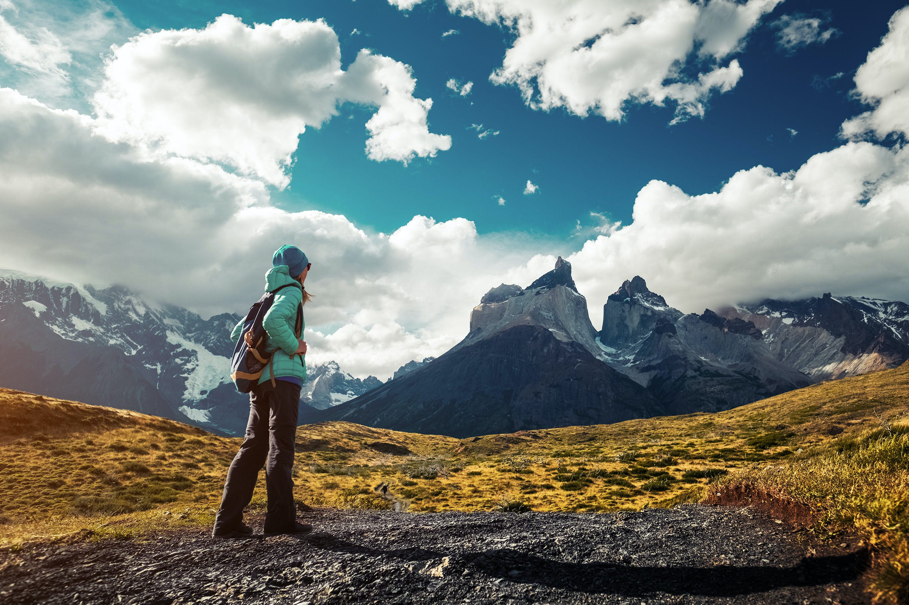
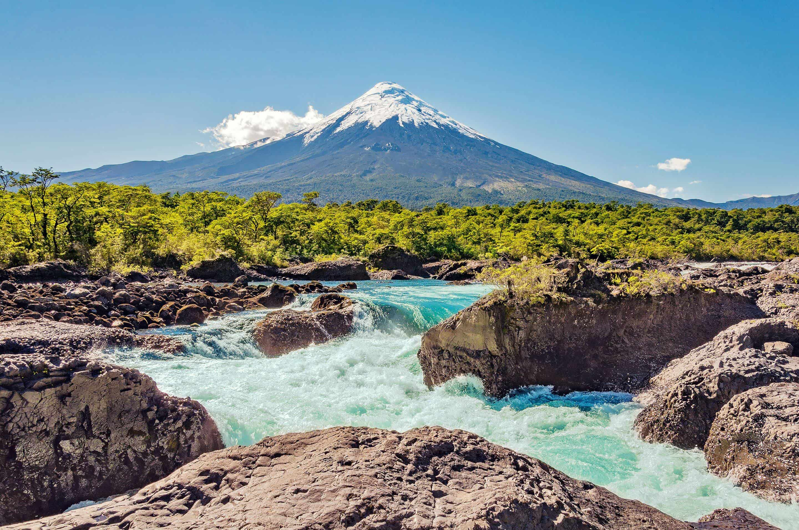

Chile is a stunningly beautiful and diverse country that offers visitors a wealth of unforgettable experiences.
From the breathtaking peaks of the Andes to the endless expanse of the Atacama Desert, Chile's landscapes are
simply awe-inspiring. Whether you're an adventure seeker or a culture lover, there's something for everyone in Chile.
With its friendly people, delicious cuisine, and rich history, Chile is a destination that's not to be missed.
Hike through some of the world's most stunning scenery, including towering granite peaks, vast glaciers, and pristine lakes. Discover a vibrant
city full of colorful houses, bohemian art, and delicious seafood. Explore the fascinating history and mysterious legends of the ancient Rapa Nui
people, while taking in the stunning views of the Pacific Ocean. Traverse lunar-like landscapes, rugged canyons, and salt flats in Valle De La Luna.
Chile is a destination that truly has it all, and these four must-see spots are just the tip of the iceberg.
